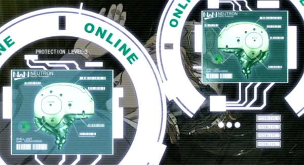

No more neuromats, the cyberbrain has revolutionized cybernetics with a simple principle but with incredible applications. Scientists have succeeded in digitizing the brain and duplicating it in a neurochip which is the basis of the cyberbrain. This neurochip is the center of a computer with an enormous memory capacity, a cellular (sometimes even satellite) wireless transmission module that allows the brain of modern man to be constantly connected to the global network. It can communicate constantly with the rest of the world and other individuals. Searching for information is now as trivial as interfacing with a machine, or communicating with others : in this day and age, about three-quarters of the population of industrialized countries have a cyberbrain. The rest either cannot afford or cannot/will not integrate technology for philosophical/religious/medical reasons. The cyberbrain is sealed in a skull capsule that protects the device from damage and electromagnetic discharges. For class B and A cyberbrains, which require a fully cyberized body, the entire brain is encapsulated and protected (and allows for rapid body-to-body transfer).
Note : in fact, once the organic brain is coupled to the cyberbrain, it is 97% unnecessary. Strangely enough, only a few thousand neurons are sufficient to retain the "Ghost", the only element of the mind that separates man from the machine nowadays (the soul in religious terms).
The cyberbrain is endowed with the same functions as a neuromat in the basic rules of Cyberpunk and most of the options of the latter are available for the cyberbrain (same price, same costs in Empathy). All cyberbrains have a cost in Humanity of 1D6 (see below for the financial cost).
The cyberbrain includes an interface socket (or QRS socket) for wired connection to the Net (or a computer, smartgun, vehicle, ACPA, etc). Other more specialized sockets can be purchased (see neuromat accessories). Having several sockets allows you to connect at higher speed to the Net (very useful for hackers) or to connect to several devices/machines at the same time.
Note : the cyberbrain must still be equipped with a specific connection module to be able to interface to a particular type of hardware (just like the neuromat). Some advanced systems (tank, military aircraft) may require more than one simultaneous connection between the pilot and the onboard computer in order to control the different systems. In this case, the pilot's cyberbrain must have a connection option for each of these connections. This is why Panzerboys and DeltaJocks often have several interface sockets and connection modules for their cyberbrain.
The cyberbrain can use memory/skills chips. Because of their protection system, these chips must be plugged into one of the sockets of the cyberbrain to be useful, unless they are equipped with the Chip Support option (which allows you to have a connection port for the chips other than the sockets).
The cyberbrain is mandatory for any full-borg conversion (100% artificial body, more and more common in the 2050s).
Although secure and encrypted, all communication via a cyberbrain goes through the Net, and is therefore interceptable, hackable by an AI, a netrunner or viruses if not properly protected. Of course, every cyberbrain is equipped with a firewall and very advanced Ghost defenses, but no security system is impenetrable. For this reason, a cyberbrain can be put in autistic mode at any time (disabling communication with the outside world via wireless). In autistic mode, the intrusion requires connecting through one of the interface sockets.
A netrunner can use his cyberbrain to attack networks, computers, IAs but also other cyberbrains in order to access/modify/erase their memory, paralyze/kill/change the perceptions of an individual or an AI and other applications. This is of course highly illegal...
A cyberbrain, because of its internal memory, can memorize names, places, and many other information perfectly. It is able to make a complete recording of the five senses and replay it later. However, this takes up so much space that the recording time is limited depending on the model. This recording can also be shared with other individuals (just like the braindance of the 20s) or sent to another medium, but only via a cable.
There are dozens of companies that make cyberbrains but they can be summarized in four classes.
Note : the skill bonus described for cyberbrains may not always apply. It implies a possibility to search the Net to assist a task, and therefore will not apply during a fight in general, unless the player first takes a full round to log in before performing the said action to find relevant information (it's up to the player to be inventive).
All cyberbrains give a +4 bonus to Library Search for finding data.
In 2050, almost all communications are wireless: why bother with a cable for your smartgun connection ? Why be connected to a terminal to access the Net ? All cyberbrains are now equipped with a wireless connection that allows them to connect to the web, to vehicles, weapons, heavy machinery... no more need to carry around your cables, unless you are a netrunner.
The cyberbrains' wireless connection also allows all types of data transmission (such as voice or any other form of data that can be digitized). Dedicated connection to vehicles/weapons/etc requires, as with wired connections, the appropriate option and the cyberbrain can connect simultaneously to two devices per installed option. These options are in fact modules containing all the necessary electronics for these types of connections, such as management of particular protocols.
Wireless connections have the advantage of being much more discreet than the cables of yesteryear, but have the disadvantage of being hackable and jammable. Even if they are encrypted and secured to the maximum, they are still vulnerable to attacks from a good netrunner. Imagine what he could do if he took control of your car/motorcycle/minigun. With one at your side, the possibilities are endless...
In 2020, the mastoid commo was the most practical solution to communicate in a squad. With a cyberbrain, the most convenient way is to do it directly via cybercomm using its wireless function and going through the Net. The communication takes place directly in your head and you can also send data such as a capture of what you see and hear, or any other type of data stored in your cyberbrain or external memory, as long as it does not exceed a certain size. Although, again, all these streams are encrypted for security, a very good netrunner or AI can get around this kind of inconvenience. However, since the whole process takes place in your head, it is perfectly invisible and inaudible to the witnesses around you. In fact, the cyberbrain has completely replaced the telephone, radios, GPS, television and most desktop computers by 2040. However, these transmissions require the presence of access points to the Net. Every city in the civilized world is almost completely covered, but this is not the case in more desolate or rural areas.
For this reason, the wireless connection of a cyberbrain can be put in "access point" mode in case access to the Net is not available. Thus several cyberbrains can communicate ad-hoc with a relay mode range of about 100 meters. The protocol used being more limited and basic, the firewall of cyberbrains communicating in this way gains a bonus of +5.
If you are lost in the middle of the Mojave Desert, it is very likely that your wireless connection is useless, so you will also lose the ability to access the Network this way. It is possible, however, to implant a satellite connection in your cyberbrain that will allow you to access it from just about anywhere (but probably not from underground). This internal cybernetic implant requires a major operation and will cost you 5000 eb as well as 1D6+2 Humanity points.
A less expensive external module also allows you to connect your cyberbrain via satellite. This external satellite connection costs 1000 eb and is connected via an interface socket (or wireless connection). It therefore allows you to relay the signal of your cyberbrain (or neuromat with radio interface) through a satellite connection. Its weight is 500g and its size is that of a walkman with a retractable antenna. A recharge lasts about 12 hours of continuous connection and transfer. It can also be connected to a mastoid commo or any other radio in order to send the signal via satellite (after digitization and encoding).
Using a cyberbrain with a wireless connection limits bandwidth, resulting in a -5 malus for Interface rolls and for Initiative. It is therefore recommended to use an interface cable and a fixed terminal for the most difficult missions. On the other hand, with wireless, the chances of damage are lower (direct electro-feedback doesn't work, but the enemy can follow your trail and infiltrate your cyberbrain and Ghost, and damage you).
On the other hand, using a cyberbrain with multiple QRS interface cables gives the netrunner a definite advantage : +2 per additional QRS cable, up to a maximum of 4 cables (maximum bonus of +6 therefore). On the other hand, using several cables increases the damage considerably during an electro-feedback attack (each additional cable adds 1D6 points of damage).
Bonuses provided by cyberbrains :